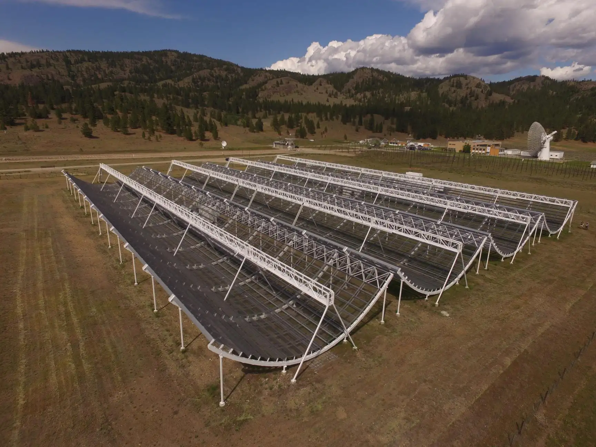

Student Research Interview
An interview with Airene — UBC Combined Honours Physics & Computer Science, Math Minor
Summer 2025 · McGill Physics & Trottier Space Institute

Photo: CHIME telescope visit during the Perseids
Today we are connecting over Zoom with Airene, who completed her undergraduate research at McGill in the summer of 2025. She joined the Kaspi Group, which studies radio transients such as pulsars and fast radio bursts (FRBs), and worked on a project linking FRB data from CHIME to galaxy cluster maps using multi-wavelength observations.
What are you studying right now?
I’m at UBC in Combined Honours Physics and Computer Science, with a minor in Math.
Which research group did you join at McGill, and what do they focus on?
I worked in Professor Victoria Kaspi’s group—the Kaspi Group—which focuses on radio astronomy, especially radio transients. A lot of the group studies fast radio bursts (FRBs), and others work on radio pulses from pulsars. My project connected to CHIME (the Canadian Hydrogen Intensity Mapping Experiment), a radio telescope in Penticton, BC.
If you had to explain your project in simple terms, how would you describe it?
FRBs are very bright, microsecond–millisecond radio flashes. CHIME detects them between 400 and 800 MHz. Most FRBs come from outside our galaxy; one well-known event came from within the Milky Way and was traced to a neutron star. As an FRB travels through space, free electrons along the line of sight disperse the signal—lower frequencies arrive later than higher ones. The amount of this “sweep” is the dispersion measure (DM), which tells us about the average electron density along the path.
My project looked at correlations between FRB locations (and their DMs) and maps of hot gas in the universe using the thermal Sunyaev–Zel’dovich (tSZ) effect, which traces galaxy clusters. I wanted to know whether FRBs preferentially occur in clusters, avoid them, or are uncorrelated. It was a multiwavelength study using X-ray, optical, and tSZ cluster catalogs.
What skills are you most proud of developing?
Automation. Early on, I was checking cluster positions manually. As the project grew, I built Python tools to automate cross-matching between FRBs and cluster catalogs. That made the analysis much more efficient and reproducible.
What was the most exciting moment of the project?
Partway through, I identified six statistical outliers—all six were associated with galaxy clusters, and two came from the same cluster. That result supported our hypothesis. We’re planning to publish a paper, and seeing my work move toward publication was really exciting.
How did you get this research opportunity?
The summer before, I joined UBC’s First Year Summer Research Experience in a gravitational-waves group, which confirmed that I enjoy research. For 2025, I applied to the USRA program at McGill. I told Prof. Kaspi I was interested in cosmology and large-scale studies, and she connected me with Dr. Larsen Simons, who had a project ready on the large-scale distribution of FRBs.
Favorite moments in the group?
The people! We had a farewell lunch (with cake) for a group member early in the summer. Those gatherings help you connect as people, not just as scientists, and understand where you fit in the group.
Why is undergraduate research important?
It helps you figure out your fit. There’s a big gap between what you learn in class and what you do in research—day to day, my project involved a lot of coding and debugging. I enjoy that (thanks to CS), but not everyone does. Undergrad research lets you find that out early and decide if grad school is the right path.
Do you plan to stay with FRBs, or try something new?
I’d like to explore something closer to pure astronomy next. My last two projects were very experimental/data-analysis heavy. My philosophy is to try a variety of projects as an undergrad and then decide what to focus on more deeply.

.png)